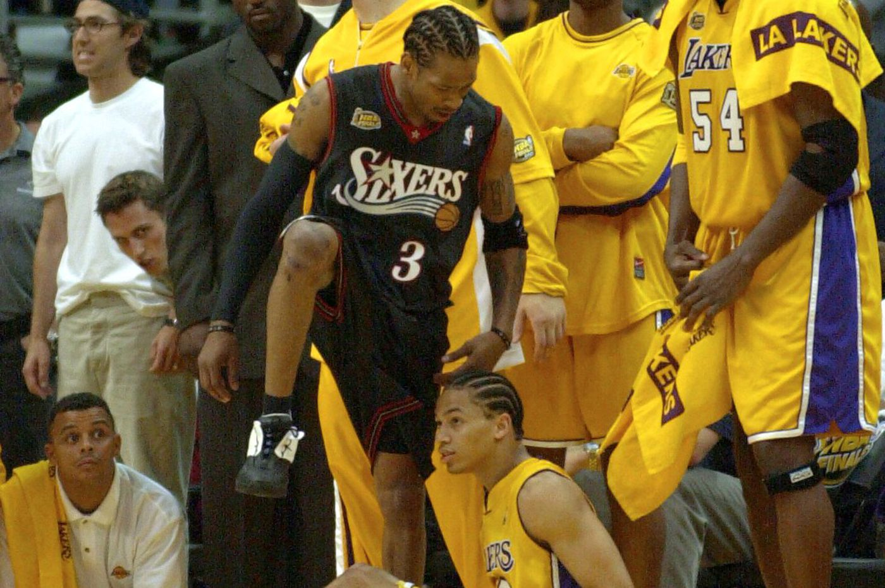

Allen
back

Elens Ēzails Aiversons dzimis 1975. gada 7. jūnijā Hamptonā, ASV ir bijušais amerikāņu basketbolists, spēlējis saspēles vadītāja un uzbrūkošā aizsarga pozīcijās, ASV basketbola valstsvienības spēlētājs. 1996. gada NBA draftā viņu izraudzījās Filadelfijas "76ers" ar kopējo 1. kārtas numuru. 11 reizes ir piedalījies NBA visu zvaigžņu spēlē.
Kopā ar ASV izlasi ir izcīnījis bronzas medaļu 2004. gada vasaras olimpiskajās spēlēs.
2013. gadā paziņoja par karjeras beigām.
2016. gadā uzņemts Neismita basketbola slavas zālē.